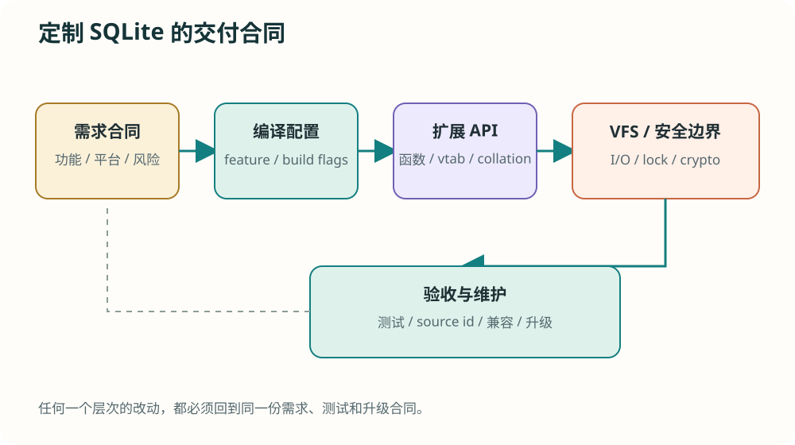
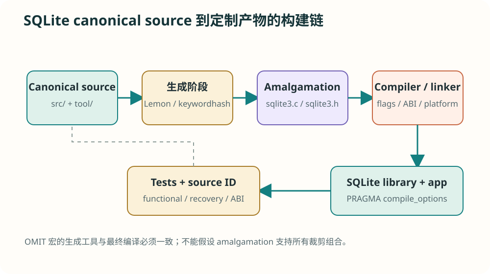
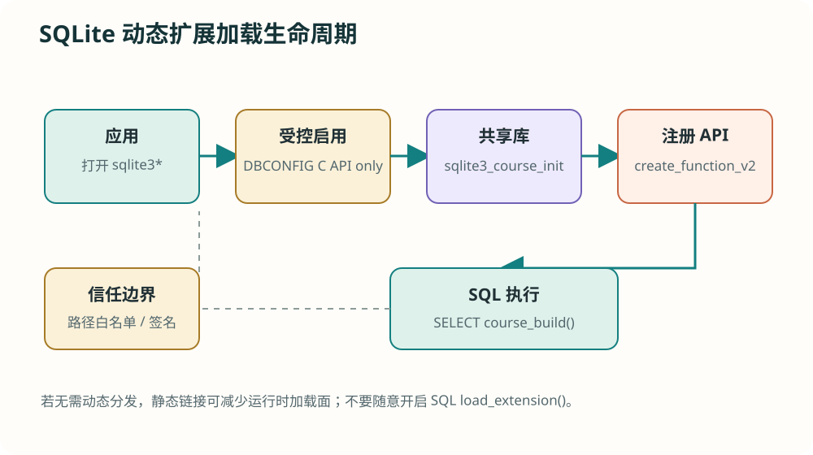
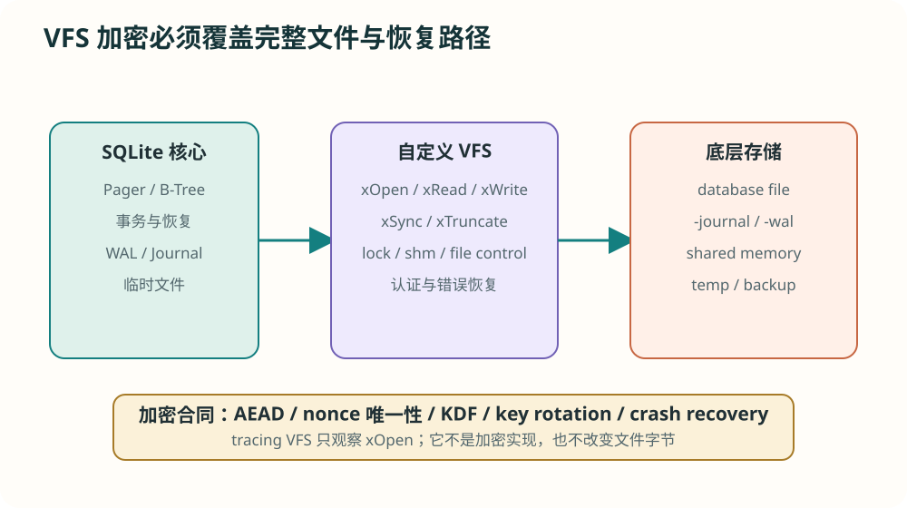

定制 SQLite：编译、扩展与 VFS 安全边界
定制数据库不是先删掉一串宏、再塞入一段 AES 代码。可靠交付从需求合同开始：明确 SQL 能力、数据格式、平台、并发、持久性、升级策略和安全目标，再选择编译选项、扩展 API 或 VFS 扩展点。
阅读提示：可轻点图解打开独立矢量原图；窄屏图解支持横向查看细节。
1. 先定义交付合同，而不是先挑编译宏
假设要把 SQLite 嵌入一个离线终端。需求可能包括 CRUD、事务、参数绑定、索引、WAL 或 rollback journal、备份恢复、加密存储、崩溃恢复、跨版本数据库兼容和可诊断性。每一项都对应不同层：SQL 语法与内置函数、编译选项、扩展注册、VFS I/O、部署密钥管理和测试。
例如“不要全文搜索”不等于可以随意定义一串 SQLITE_OMIT_* 宏并宣称二进制体积会减半；“加密数据库”也不等于只把主数据库文件的字节写成密文。先列出功能与非功能要求，再核对上游支持的构建选项和接口。

2. 编译与功能裁剪：SQLITE_OMIT_* 不是稳定产品配置语言
SQLite 支持编译期选项来启用、调整或省略功能，但官方对 SQLITE_OMIT_* 有明确警告：这些选项大多不受支持，有些并未充分测试；某个版本里能移除代码的宏，未来版本可能变成 no-op，反之亦然。错误组合还可能导致 SQLite 失效或返回错误结果。
更重要的是，很多 SQLITE_OMIT_* 选项通常只在 canonical source build 中可靠工作，不保证在现成 amalgamation 上按预期生效。若使用这些选项，应从完整源文件构建，并确保 Lemon parser、mkkeywordhash 等生成步骤使用相同宏集合。不能只在最终 sqlite3.c 编译命令里补一个宏，就认为整个生成链已经一致。

官方基本构建入口是 Unix/macOS 的 ./configure && make，Windows 则使用对应的 Makefile.msc。如果确实需要生成带指定选项的定制 amalgamation，应按官方编译文档从 canonical source 与 Makefile 模板生成，再交给目标平台编译器。
# 从 SQLite canonical source 开始
./configure
make
# 需要自定义 amalgamation 时：
# 复制并编辑官方 Makefile.linux-gcc 模板，
# 在生成阶段配置选项，然后：
make clean
make sqlite3.c
# 应用运行时核对实际构建
sqlite3 :memory: "SELECT sqlite_version(), sqlite_source_id();"
sqlite3 :memory: "PRAGMA compile_options;"裁剪结果要通过 PRAGMA compile_options、sqlite3_compileoption_used()、二进制尺寸测量和功能测试一起验证。不能用“宏列表变长”代替实际构建验证，也不能用一次尺寸对比推导所有平台的安全收益。
3. 应用定义扩展：把业务能力放在受控注册点
SQLite 扩展可以注册 SQL 函数、排序规则、虚拟表或 VFS。扩展既可以作为动态共享库加载，也可以静态链接进应用。对于业务逻辑，通常先用 sqlite3_create_function_v2() 注册函数；只有确实需要跨应用分发时，才考虑动态加载。
仓库示例 examples/28_course_ext.c 注册一个只用于验证加载链路的 course_build() 函数。它返回固定构建标识，不执行加密、不访问文件，也不代表生产业务函数。扩展入口使用 sqlite3ext.h 的 API 表，避免把扩展错误地当成普通应用程序直接链接。
#include <sqlite3ext.h>
SQLITE_EXTENSION_INIT1
static void course_build(
sqlite3_context *ctx, int argc, sqlite3_value **argv
){
(void)argc;
(void)argv;
sqlite3_result_text(
ctx, "sqlite-course-extension/1", -1, SQLITE_STATIC
);
}
int sqlite3_course_init(
sqlite3 *db, char **pzErrMsg,
const sqlite3_api_routines *pApi
){
(void)pzErrMsg;
SQLITE_EXTENSION_INIT2(pApi);
return sqlite3_create_function_v2(
db, "course_build", 0,
SQLITE_UTF8 | SQLITE_DETERMINISTIC | SQLITE_INNOCUOUS,
0, course_build, 0, 0, 0
);
}SQLITE_DETERMINISTIC 只在函数确实对相同输入保持相同输出时才可设置；SQLITE_INNOCUOUS 也必须基于函数行为判断，不能为了通过 schema 安全限制而随手添加。对有副作用或可能泄露应用内部状态的函数，应考虑 SQLITE_DIRECTONLY，防止恶意数据库 schema 诱导应用在打开数据库时执行该函数。
扩展加载默认关闭。若应用必须动态加载扩展，优先通过 sqlite3_db_config(db, SQLITE_DBCONFIG_ENABLE_LOAD_EXTENSION, 1, ...) 仅打开 C API 的加载能力，而不是无差别启用 SQL load_extension()。仓库中的 examples/28_extension_host.c 用这个方式加载并验证示例扩展。

4. VFS 装饰器：文件打开只是接口合同的第一步
sqlite3_vfs 描述操作系统接口，包括 xOpen、xDelete、xAccess、xFullPathname、时间、随机数和动态库加载等操作。每个打开的文件由 sqlite3_file 表示，其 sqlite3_io_methods 提供 xRead、xWrite、xTruncate、xSync、锁、共享内存和可选 fetch/unfetch 等方法。
VFS 包装器常采用装饰器结构：保留底层平台 VFS，创建一个新的 sqlite3_vfs 对象，在需要观察或变换的回调中执行自定义逻辑，再委托给父 VFS。这样可以先做可观测性、路径审计或故障诊断，再逐步扩展到真正需要的 I/O 变换。
examples/28_vfs_trace.c 是一个刻意保持简单的 tracing VFS：它复制默认 VFS 的结构，只替换 xOpen；记录打开路径和 flags，然后将请求转发给原始 VFS。其他 VFS 回调和 sqlite3_file 方法表仍由平台实现提供。它可编译、可运行，但明确不是加密 VFS。
static sqlite3_vfs g_wrapper;
static sqlite3_vfs *g_parent;
static int trace_xOpen(
sqlite3_vfs *pVfs, const char *zName,
sqlite3_file *pFile, int flags, int *pOutFlags
){
(void)pVfs;
fprintf(stderr, "xOpen: %s flags=%x\n",
zName ? zName : "<temporary>", flags);
return g_parent->xOpen(
g_parent, zName, pFile, flags, pOutFlags
);
}
/* 注册前复制默认 VFS，只替换 xOpen */
g_parent = sqlite3_vfs_find(0);
g_wrapper = *g_parent;
g_wrapper.pNext = 0;
g_wrapper.zName = "course-trace-vfs";
g_wrapper.xOpen = trace_xOpen;
sqlite3_vfs_register(&g_wrapper, 0);真正的 VFS 需要完整遵守文件大小、同步、锁、删除、临时文件、WAL 共享内存与版本化方法表等合同。只包装 xRead/xWrite 而忽略 xSync、锁和 journal/WAL 路径，可能让一个“能打开、能查询”的 demo 在断电恢复或并发下损坏数据库。
5. 加密边界：AES-ECB 示例不能成为生产设计
SQLite 核心并不提供一个可以通过几行 C 代码开启的通用透明数据库加密开关。加密可以由专门的 SQLite 扩展、商业加密版本或经过安全审查的存储层实现；但选择哪一层，会决定数据库格式、备份兼容、WAL 行为和密钥管理方式。
旧版示例中的 AES-256-ECB 不具备现代文件加密所需的安全属性：相同明文块会产生相同密文块；它没有认证标签来检测篡改；示例还把密钥直接当作字符串，没有 KDF、随机盐、密钥轮换或错误处理。即便改用带 nonce/IV 的模式，也必须证明同一密钥下 nonce 不重复，并处理崩溃恢复。这样的代码只能作为反例，不能保留为“加密 VFS 核心实现”。

设计页面级或文件级加密时，至少要回答：每个加密单元如何认证；nonce 如何保证在同一密钥下不重复；页号、文件类型、数据库身份和格式版本是否进入认证上下文；密钥如何从用户凭据安全派生；错误密钥与篡改如何区分；WAL、rollback journal、临时文件和备份如何处理；崩溃中途写入如何恢复；如何 rekey 和升级文件格式。
VFS 可以是扩展点，但“VFS 能拦截 I/O”并不等于“任何加密协议都能安全地放在 VFS”。加密格式必须与 SQLite 的页面写入、日志和恢复模型协同设计，并经过密码学与故障恢复审查。
6. 测试、构建与发布：交付的是可验证的数据库产品
仓库包含两个可执行 C 实验。扩展测试构建共享库，再由 host 程序仅启用 C 扩展加载接口并断言 SQL 函数返回值；VFS 测试构建 tracing VFS，打开磁盘数据库、创建表、写入和查询，再确认 xOpen 被调用。它们分别验证扩展 ABI 与 VFS 委托路径，不会冒充加密安全测试。
cc -std=c11 -Wall -Wextra -Werror -O2 -fPIC -shared \
examples/28_course_ext.c -o /tmp/course_ext.so
cc -std=c11 -Wall -Wextra -Werror -O2 \
examples/28_extension_host.c -lsqlite3 -o /tmp/extension-host
/tmp/extension-host /tmp/course_ext.so
cc -std=c11 -Wall -Wextra -Werror -O2 \
examples/28_vfs_trace.c -lsqlite3 -o /tmp/vfs-trace
(cd /tmp && /tmp/vfs-trace)完整产品验证还要包括：SQLite 上游测试套件；目标平台和编译选项矩阵；CRUD、事务、备份与恢复；并发和锁冲突；扩展加载白名单；文件格式向前 / 向后兼容；故障注入；静态分析与内存检测。任何“性能提升百分比”都必须由固定工作负载、编译器、CPU、系统、数据集和重复测量支撑。
最后发布时记录 SQLite source ID、编译选项、依赖库版本、扩展清单、数据库格式版本、测试结果和升级回滚方案。若使用非默认编译选项或私有扩展，必须把它们当作产品兼容性的一部分长期维护。
自测：为什么一个只加密主数据库文件的 xRead/xWrite 包装器是不完整的？
SQLite 可能同时使用 rollback journal、WAL、临时文件和共享内存；事务提交、崩溃恢复、同步与锁语义也会影响安全和正确性。若只处理主数据库字节，日志可能泄露明文，或因格式与恢复路径不一致而无法正确打开和恢复。
官方资料与版本边界
- How To Compile SQLite：canonical source、amalgamation 与构建方法。
- Compile-time Options：SQLITE_OMIT_* 的限制与支持边界。
- OS Interface Object：sqlite3_vfs 结构和版本化方法。
- I/O Methods Object：sqlite3_file 的 I/O 方法合同。
- Run-Time Loadable Extensions：扩展入口、动态加载与静态链接。
- Enable Or Disable Extension Loading：只启用 C API 的安全方式。
- Function Flags：DETERMINISTIC、DIRECTONLY、INNOCUOUS 的语义。
- SQLite Encryption Extension (SEE) 与 SQLCipher：可评估的加密发行方案。
- NIST SP 800-38A：分组密码工作模式背景。